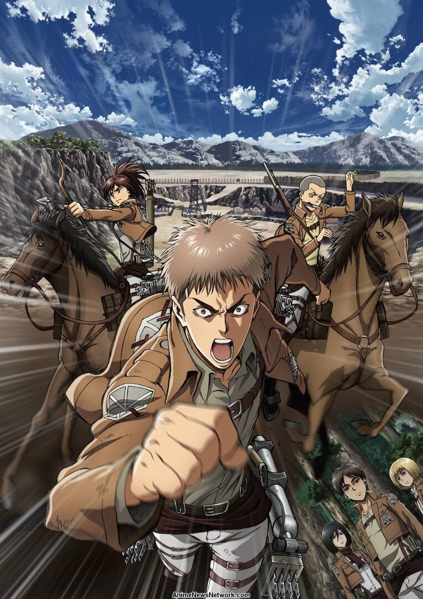

| Title | A Sudden Visitor |
|---|---|
| Japanese Title | Totsuzen no Raihousha |
| Type | OVA |
| Release Date | April 9, 2014 |
| Duration | Approximately 25 minutes |
| Based On | Attack on Titan manga |
| Studio | Wit Studio |
A Sudden Visitor focuses on Jean Kirstein and Sasha Blouse during a cooking competition held by the 104th Training Corps. The two soldiers find themselves competing against each other while trying to prove their skills.
Sasha becomes determined to prepare the best possible dish, while Jean also wants to impress those around him. Their rivalry quickly turns into a chaotic competition involving the other members of their training group.
The OVA provides a lighter story centered on the personalities and relationships of the characters before they become experienced members of the military.
Unlike the main storyline, the episode focuses mostly on comedy and everyday interactions, giving the members of the 104th Training Corps an opportunity to be together outside the battlefield.